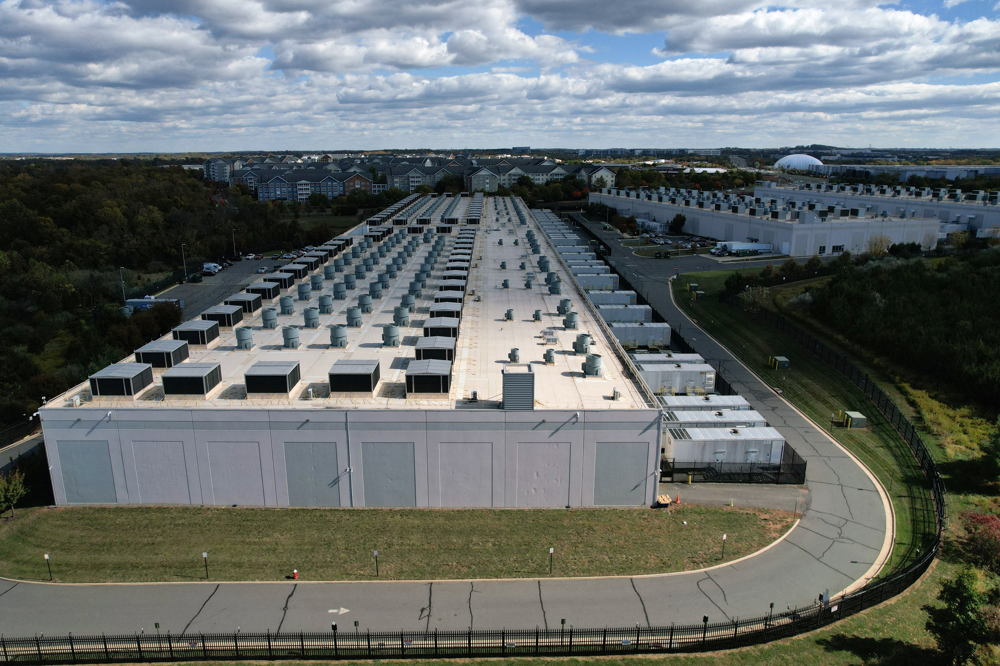
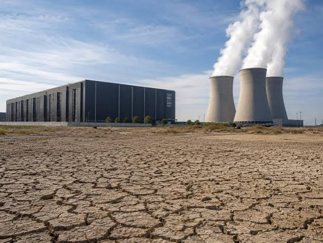
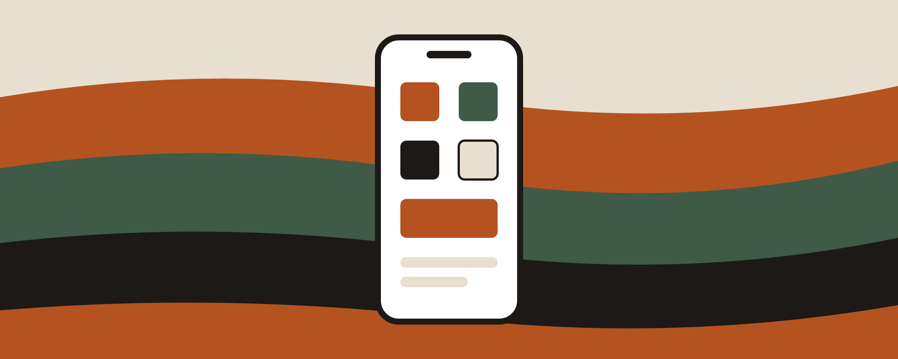
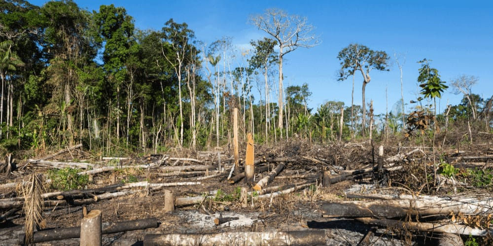
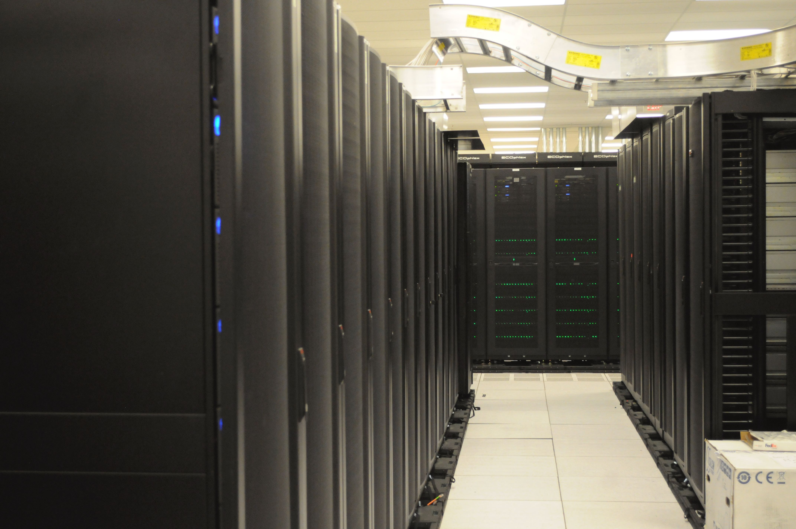
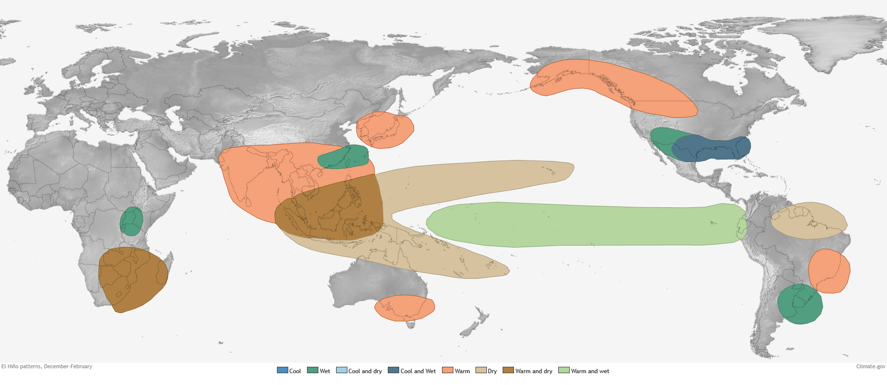

Produções das equipes
Aqui apresentamos as diversas produções feitas pelos grupos da turma 117 como uma integração entre as matérias de Prática de Laboratório (PL1) e Geografia.
Sinta-se à vontade para explorar as criações e pesquisas!

Do solo ao celular: como a tecnologia na mineração de minerais críticos influencia a sociedade do Brasil.
Mostra como a mineração de minerais críticos, usados em celulares e outros eletrônicos, está mudando com novas tecnologias e o que isso muda na economia e na vida da população brasileira.
Autores:
Grupo 1

Estados pesquisados para ter data centers no Brasil e seus impactos ambientais.
Pesquisa quais estados brasileiros são os mais cotados para receber data centers e analisa os impactos ambientais que essa instalação pode causar em cada um.
Autores:
Grupo 2

O consumo massivo de água para o uso de data centers.
Explica por que os data centers gastam tanta água, principalmente no resfriamento dos servidores, e quais os efeitos desse consumo sobre os recursos hídricos.
Autores:
Grupo 3

Impactos da obtenção de matéria-prima em países subdesenvolvidos.
Discute os impactos sociais e ambientais de extrair matéria-prima em países subdesenvolvidos e como isso se liga à produção da tecnologia que usamos.
Autores:
Grupo 4

O uso da IA na detecção de áreas de desmatamento
Apresenta como a inteligência artificial ajuda a identificar áreas desmatadas por imagens de satélite, tornando o monitoramento mais rápido e preciso.
Autores:
Grupo 5

Impacto dos data centers no meio ambiente, com foco em Campinas.
Analisa como os data centers afetam o meio ambiente, com foco na cidade de Campinas, considerando gasto de energia, água e o impacto local.
Autores:
Grupo 6

Como funcina a previsão de El Niño e La Niña.
Explica como são feitas as previsões de El Niño e La Niña, como o aquecimento ou resfriamento do Pacífico altera o clima do Brasil e traz um quiz para testar o aprendizado.
Autores:
Grupo 7